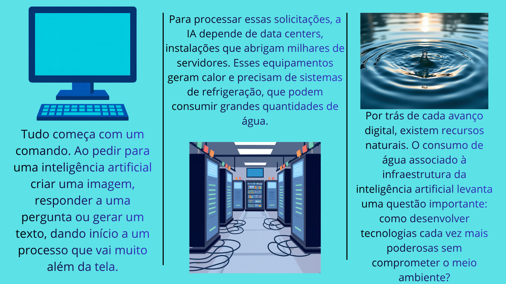

O consumo de água da inteligência artificial
Saiba Maisinteligências artificiais
A inteligência artificial (IA) está cada vez mais presente em nosso cotidiano, facilitando tarefas, criando imagens e transformando a maneira como acessamos informações. Porém, por trás desses avanços tecnológicos, existe um impacto ambiental que nem sempre percebemos. O funcionamento dessas ferramentas exige grandes quantidades de energia elétrica e água, principalmente nos centros de dados, responsáveis pelo processamento das informações e pelo resfriamento dos equipamentos.
Embora o consumo de água de uma única interação possa parecer pequeno, o uso frequente dessas tecnologias por milhões de pessoas pode aumentar significativamente a demanda por recursos naturais. Além disso, a geração de energia necessária para manter esses sistemas funcionando também pode contribuir para a emissão de gases de efeito estufa. Diante desse cenário, é fundamental refletir sobre os impactos ambientais da inteligência artificial e buscar formas de tornar seu desenvolvimento mais sustentável.
Explore nosso site para entender melhor essa relação entre tecnologia e meio ambiente, descobrir dados importantes e conhecer alternativas que podem contribuir para um futuro digital mais consciente e responsável!

Saiba mais informações no nosso site
O avanço da inteligência artificial também exige atenção aos seus impactos ambientais e ao uso responsável dos recursos naturais.